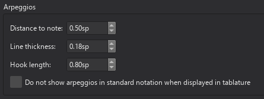
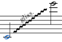
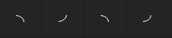

Arpeggios and glissandos
Arpeggios, strum arrows, glissandi (slide), portamento (glide), brass or woodwind instrument bends and Guitar techniques: Slide in and slide out can be applied from the Arpeggios & glissandos palette:

Many have an adjustable playback effect (see below).
Arpeggios
Adding an arpeggio/strum to your score
To add an arpeggio/strum to a score:
- Click on any note in a chord (multiple selection is possible)';
- Click on an arpeggio/strum symbol in the palette.
Alternatively you can drag an arpeggio/strum symbol from a palette onto a notehead.
Adjusting the height of an arpeggio/strum
Click on an arpeggio and two adjustment handles will appear at the top and bottom of the symbol. You can move either up or down by dragging, or by selecting a handle and using the up/down keyboard arrows.
Creating multi-voice or cross-staff arpeggios
Arpeggios only span the voice to which they are input initially, but then can then be adjusted to span multiple voices in the same instrument, even across multiple staves.
To adjust an arpeggio to span multiple voices:
- Select either the top or bottom handle of the arpeggio
- Press
Shift+UporShift+Downto move the handle up or down to the next adjacent voice
The handle will jump to the next voice above or below that has any notes at that point. This includes voices on staves above or below, in the case of multi-staff instruments.
The arpeggio is considered to 'belong' to the uppermost voice that it spans, and will be coloured accordingly.
Changing playback of arpeggios
To change the speed of a selected arpeggio:
- Go to the Properties panel
- Click Playback
- In the popup, adjust the Spread delay property.
If you want to turn off playback altogether:
- Go to the Properties panel
- Untick the Play checkbox.
Arpeggio style
Default properties for all arpeggios in the score can be adjusted from the style menu at Format -> Style -> Arpeggios:

Portamento
To add a slide or portamento between two notes, add a glissando line and change its appearance and playback setting.
To add a slide or portamento before or after a note before a note (a string instrument or guitar technique), add either one of the four brass or woodwind instrument bends or a Guitar techniques: Slide in and slide out, see also Guitar techniques. Alternative wavy symbols are found in the Symbols category in Master palette, those do not affect playback.
Glissandos
Note: Guitar slides are covered in Guitar techniques.
Adding a glissando to your score
- Select one or more start notes;
- Click on the desired glissando icon in the palette. A glissando is created extending to the next note in the same voice:

Alternatively you can drag a glissando symbol from the palette onto a notehead.
Glissandos can cross staves if needs be:

Editing range of a glissando
If required, you can change the start or end position of a glissando as follows:
- Select the edit handle whose position you want to change;
- Press
Shift+Up/Down/Left/Rightto move the handle in the specified direction, one note at a time.
This method can also be used to move the edit handle between voices and across staves.
Changing appearance of glissandos
The line type of a selected glissando - whether straight or wavy - and any text associated with it, can be changed in the Glissando section of the Properties panel. You can also turn off text by unchecking the Show text box.
Changing playback of glissandos
To change the playback of a glissando:
- Go to the Properties panel
- Click Playback
- In the popup, select an option from the Style dropdown.
The available options are Chromatic, White keys, Black keys, Diatonic and Portamento. This last option creates a portamento between two notes; to add other types of slide see Portamento, above.
To turn off playback off the glissando entirely:
- Go to the Properties panel
- Untick the Play checkbox.
Glissando properties
The following properties are available in the Glissando section of the Properties panel:
- Line type: either Straight or Wavy. For a straight line, the following additional options are available:
- Thickness: the thickness of the line
- Line style: continuous, dashed or dotted
- Show text: whether to show text over the glissando
- Text: the text to show (by default, "gliss.").
Text will only appear if there is sufficient space for it, i.e. if the glissando line is long enough.
The default style of glissando text is defined in Format -> Style -> Text styles under Glissando.
Bends
Not to be confused with Guitar techniques: Bends.
The Arpeggios & glissandos palette also contains bend symbols for brass or woodwind instruments:

These have a playback effect on the score.
Types of bends
The four icons represent fall, doit, plop and scoop. (If you are not sure which are which, hovering over the palette icon will display a tooltip with the name of the symbol.) Falls and doits come after the notehead, plops and scoops go before it.
Adding a bend to your score
- Select a notehead
- Click on the desired bend symbol in the palette.
Alternatively, drag a bend symbol onto a notehead in the score.
Changing appearance of bends
To change the shape of the bend, click on it and four adjustment handles become visible. Drag the handles, or click on them and press the keyboard arrows, until you get the shape you want.